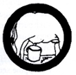

Dairying
- Know and understand the relative nutritional values of milk from cow, carabaos, and goats.
- Milk a cow, carabao, or goat.
- Understand and demonstrate the pasteurization of milk, and the care of dairy utensils and appliances.
- Understand the care and management of dairy animals.
- Visit a milk or dairy plant. Make a report on your visit.
|